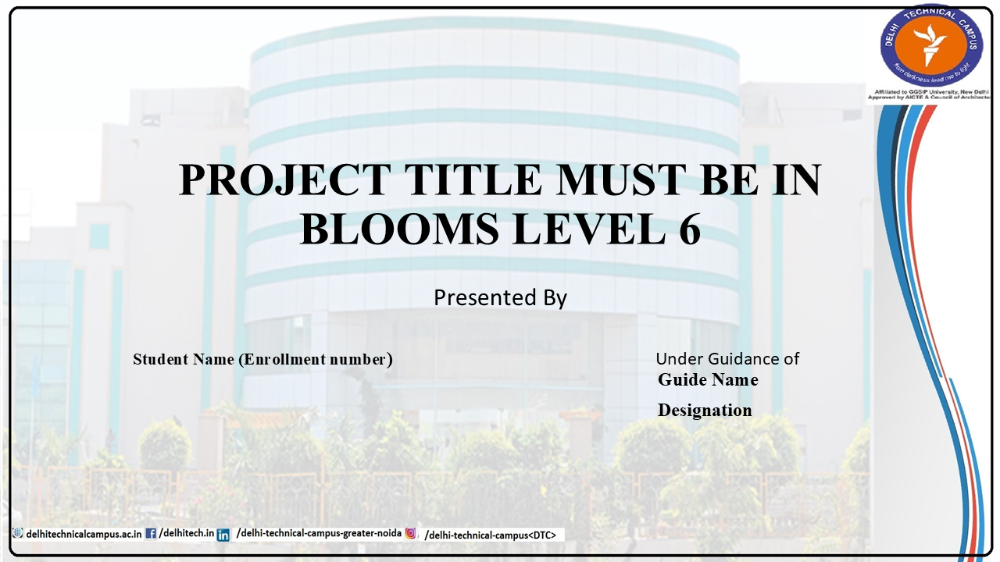

Purpose
Institution-branded cover page that sets the formal tone and enforces the metadata required for submission.
- Large centered title in uppercase serif text.
- “Presented By” centered below the title.
- Student details on the left, guide details on the right.
- Use bold emphasis for the student name, guide name, and designation.
